About Ayurveda
アーユルヴェーダについて

アーユルヴェーダとは、サンスクリット語のアーユス（Ayus／生命）とヴェーダ（Veda／科学）を組み合わせた「生命科学」という意味で、五千年の歴史をもつインド・スリランカ発祥の伝統医療で、中国の漢方と同様、世界保健機構（WHO）によって公式に承認されています。 西洋医学が、病気の症状を取り除く治療医学であるのに対し、アーユルヴェーダはより健康に、長寿や若さを保つことを目的とした予防医学になり、極めて洗練された健康法として脚光を浴びるようになり、1977年には日本でもヨーガと共に知名度も上がり多くの人に注目され始めています。
アーユルヴェーダでは、身体を構成するエネルギーをドーシャと呼んでおり、ドーシャが乱れると病気になるとの考え方です。 例として、自分にあっていないものを食べすぎたり、生活の乱れや、自分に負荷がかかるような状態が続いたり、休息が必要な時にそのことに気づかなかったりする事です。アーユルヴェーダ でそのねじれをほどきまっすぐな方向へ向けられるよう導きます。
ドーシャの乱れを紐解き元の状態に導くことを提案する健康法がtoa healingのアーユルヴェーダです。
toa healingでは、人体を理解し、アヴィヤンガと呼ばれる全身のオイルマッサージで過剰なドーシャを溶かし、ドーシャのバランスを整えます。 ドーシャのバランスが整うことで体内の浄化にも繋がり、バランスの調整、毒素の排泄も行っていきます。
About Dosha
ドーシャについて
アーユルヴェーダでは、人の体には「ヴァータ」「ピッタ」「カパ」と呼ばれる3つの生命エネルギーがあるとされ、この3種類のエネルギーを“ドーシャ”と呼びます。人はみんな3つすべてのドーシャを持っていますが、ほとんどの人は３つのドーシャのうち、１つもしくは２つ優勢なドーシャがあります。 アーユルヴェーダでは、これらの「ドーシャ」がバランスの取れている状態を健康と位置付け、そのバランスが崩れると健康を損なう状態になると考えます。 自分の生まれ持った性質や、今の環境や状態がどのドーシャに属するのかを知ることが、アーユルヴェーダでは大切なことです。

VATA(ヴァータ):風のエネルギー
軽・冷・乾・粗・動の性質を持ち、肉体の運動、感覚の刺激や神経の伝達、呼吸といった働きを司ります。
PITTA(ピッタ):火のエネルギー
熱・鋭・流・変・液の性質を持ち、体内における化学変化、食物の消化・吸収、代謝といった働きを司ります。


KAPHA(カパ):水のエネルギー
重・冷・遅・油・緩の性質を持ち、身体に結合エネルギーとして、肉体の構造や体力の維持、同化作用といった働きを司ります。
toa healingのサービス
toa healingでの施術について
toa healingではカウンセリングもセットでの施術になります。 アーユルヴェーダのトリートメント（アビヤンガ・シロダーラ）をお受けになる際には、セラピストによるアーユルヴェーダカウンセリングも毎回セットでお受けいただけます。 初めてtoa healingのアーユルヴェーダメニューをお受けになる方は30分、リピーターの方は15分、しっかりご体調やお悩みをお聞きして、お一人おひとりに最適な施術とオイルを選びます。 ヴァータ（風）、ピッタ（火）、カパ（水・土）という3種の生命エネルギーのバランスが、自分自身にとって最適な働きをして、快適で力強い、幸せな毎日を送れるようにエネルギーバランスを整えていきましょう。カウンセリングでは日々の生活の中で行える食事、睡眠、運動、心がけなどを通したバランスの整え方もお伝えしています。